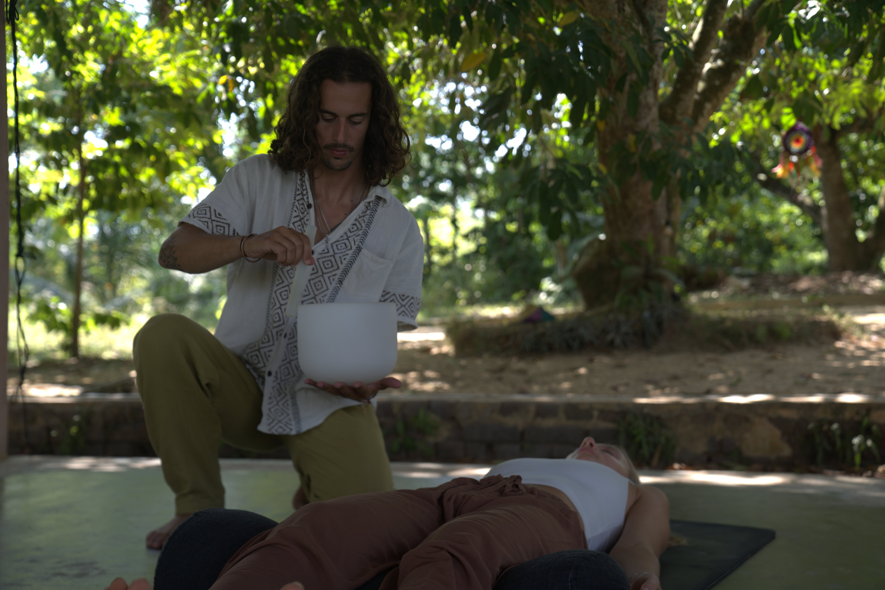
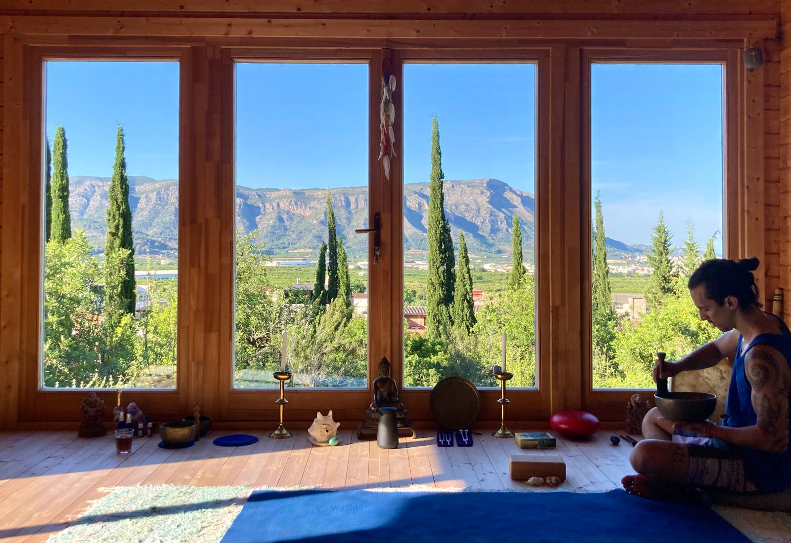
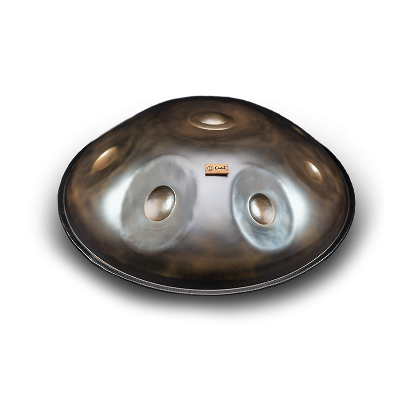
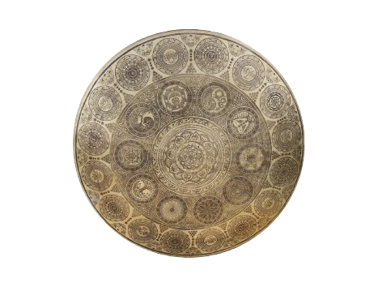
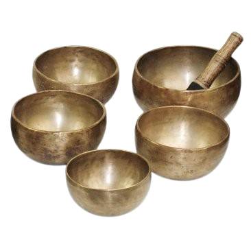
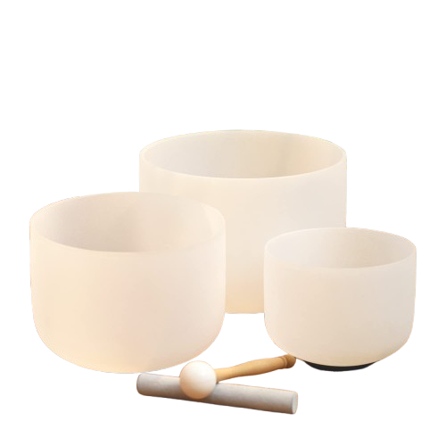
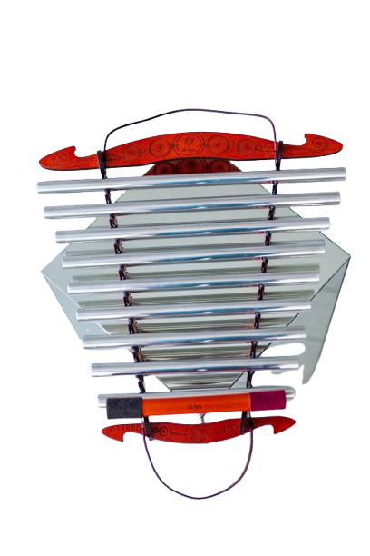

Terapia sonora para calmar la mente, relajar el cuerpo y volver a tu centro.

Un baño de sonido es una sesión guiada donde el cuerpo es envuelto por frecuencias e instrumentos vibracionales. Te tumbas, respiras y dejas que el sonido haga su trabajo.
Facilito sesiones en Valencia donde no tienes que "hacer nada". Solo permitirte parar y recibir: el sonido crea un estado de calma, presencia y reorganización interna. Muchas personas lo describen como una sensación de silencio por dentro, incluso cuando suenan los instrumentos.
Reservar una sesiónEste tipo de sesión puede ayudarte especialmente si estás en alguno de estos puntos.
Tienes el sistema nervioso acelerado y necesitas salir del modo alerta.
Sientes ansiedad, tensión o saturación mental y no consigues desconectar.
Te cuesta dormir, descansar o simplemente parar.
Necesitas claridad y tierra para tomar decisiones con más presencia.
Mi forma de guiar un baño de sonido es sencilla y humana. Sin rituales innecesarios.
Llegamos, nos tomamos unos minutos para respirar, soltar el día y entrar en el cuerpo. Después el sonido te envuelve por capas — gong, cuencos tibetanos, handpan, cuarzo — dejando espacio para que tu sistema se regule. Al final volvemos despacio. Sin prisa. Si lo necesitas, compartimos sensaciones y te llevo una práctica simple para integrar.
No es una sesión para "hacer". Es una sesión para recordar.
Cada persona lo vive a su manera. Lo más habitual es notar:

Cada instrumento tiene su propio sonido y registro. Los combino según lo que la sesión necesita.
Sonido envolvente que ancla el cuerpo a un estado de calma y presencia.

Vibración profunda y envolvente. Limpia el campo energético y moviliza lo estancado.

Armónicos que calman el sistema nervioso y llevan al equilibrio natural.

Alta vibración para una relajación profunda y aflojar tensiones circulares.

Sonido suave y acompañante que sostiene los momentos de quietud de la sesión.

Melódica y orgánica. Conecta con la respiración y ancla la presencia en el cuerpo.
El baño de sonido se adapta a tu momento.
Sesión privada, personalizada, a tu ritmo. Más íntima. Ideal si es la primera vez o si buscas una profundidad mayor.
Reservar →Una experiencia compartida que muchas parejas describen como una de las más especiales. Dos personas, una sesión.
Reservar →Sesiones abiertas en Valencia con aforo limitado. La energía del grupo amplifica la experiencia.
Ver fechas →Llevo más de diez años con el sonido — desde hacer bases de hip-hop con 17 años hasta el handpan, los cuencos tibetanos y el gong. No llegué a esto desde un máster: llegué porque lo necesité, y porque vi lo que hacía en mí.
Tengo formación específica en terapia de sonido con cuencos, gongs y armónicos. Cada sesión que guío viene de ahí — de haberlo vivido antes de compartirlo.
No. Solo ven con ropa cómoda y permítete estar.
Nada especial. Ropa cómoda. Si tienes manta o esterilla propia puedes traerla, pero no es necesario.
Sí. Si el cuerpo necesita ese descanso, es bienvenido.
Una sesión ya es suficiente para notar algo. Para cambios más sostenidos, recomiendo entre 3 y 6 sesiones con cierta regularidad.
Ofrezco las dos opciones. Las individuales son en cualquier momento, las grupales tienen fechas concretas — consulta la agenda.
Si estás embarazada, tienes marcapasos o alguna condición médica relevante, consúltame antes de reservar.
Las sesiones individuales y en pareja son en Valencia. Las grupales se celebran en distintos espacios de la ciudad — consulta las próximas fechas en la agenda.
Escríbeme por WhatsApp y lo organizamos. Sin formularios, sin compromiso.
Escribir por WhatsApp